🛣[Deep Learning]Stanford CS224w:Machine Learning with Graphs
想说的话🎇
🔝课程网站：http://web.stanford.edu/class/cs224w/
👀一些资源: B站精讲：https://www.bilibili.com/video/BV1pR4y1S7GA/?spm_id_from=333.337.search-card.all.click&vd_source=280e4970f2995a05fdeab972a42bfdd0
https://github.com/TommyZihao/zihao_course/tree/main/CS224W
Slides: http://web.stanford.edu/class/cs224w/slides
The limitation of node embedding
-
\(O(|V|d)\) parameters are needed：No sharing of parameters between nodes，every node has its own unique embedding
-
Have no ability to generate embeddings for nodes that are not in the training set
-
Do not incorporate structural node features (e.g. node type, node degree)
Permutation Invariance(置换不变性)
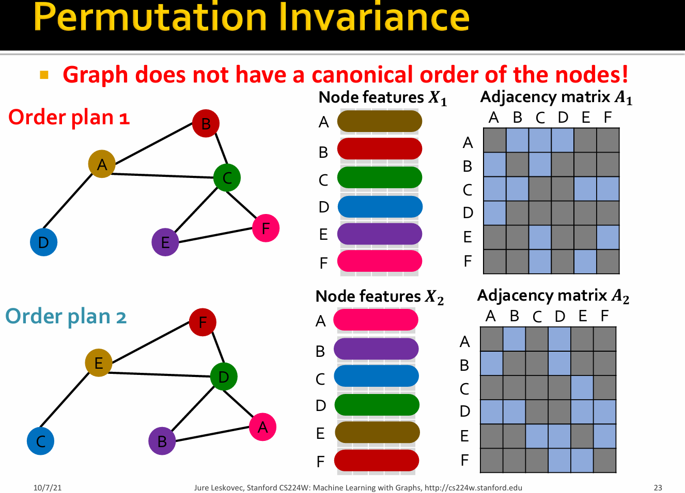
For order plan 1 and order plan 2, graph and node representation should be the same, but the node embeddings are different.
Consider we learn a function \(f:\mathbb{R}^{|V| \times m}\times \mathbb{R}^{|V| \times |V|}\) to map the graph \(G=(A,X)\) to a vector \(\mathbb{R}^d\), then the function \(f\) should be permutation invariant: \(f(A,X) = f(A',X')=f(PAP^T,PX)\) for any permutation \(P\).
Permutation 𝑃: a shuffle of the node order.Example:\((A,B,C)->(B,C,A)\).
for different order of nodes, the adjacency matrix \(A\) is different, but the output of \(f\) should be the same!.
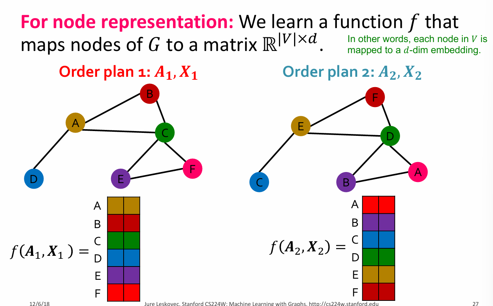
Permutation Equivariant(置换等变性)
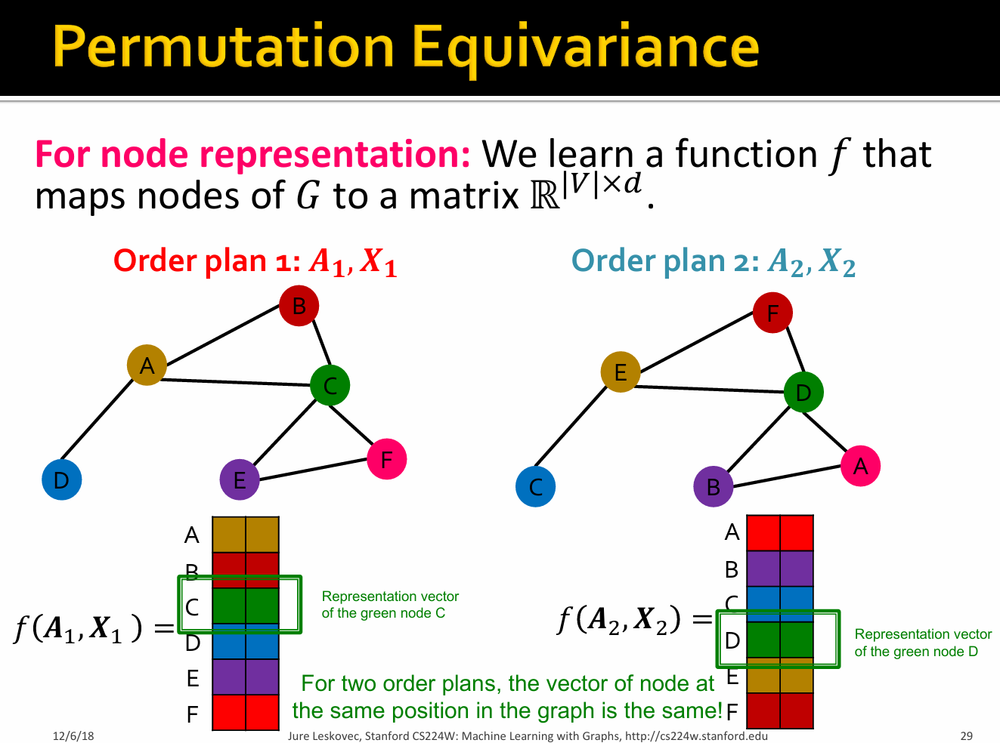
Consider we learn a function \(f:\mathbb{R}^{|V| \times m}\times \mathbb{R}^{|V| \times |V|}\) to map the graph \(G=(A,X)\) to a vector \(\mathbb{R}^{|V| \times d}\).then the function \(f\) should be permutation equivariant: \(Pf(A,X) =f(PAP^T,PX)\) for any permutation \(P\).
 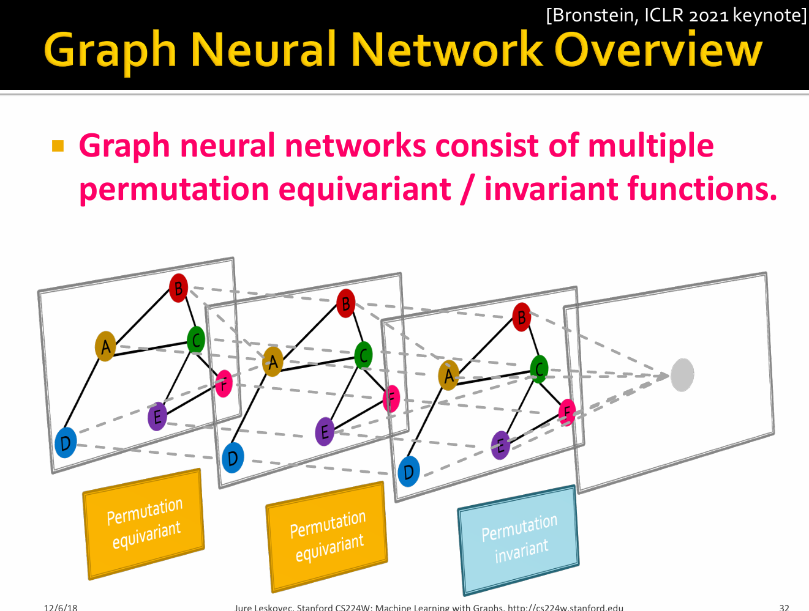
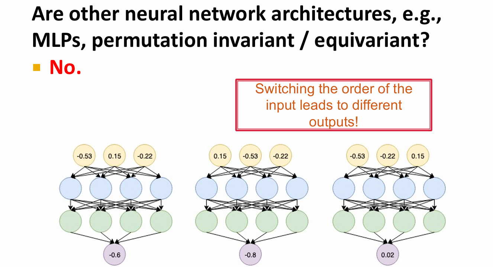
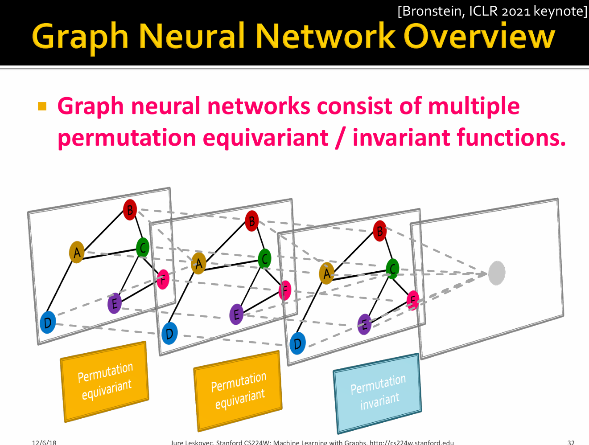
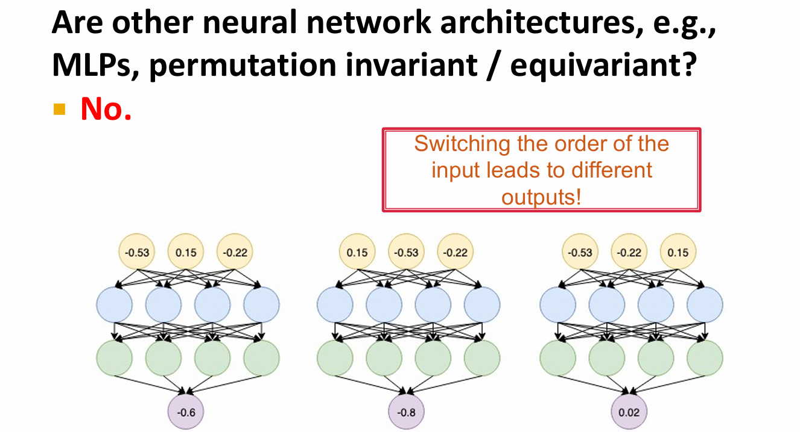
Idea: Node’s neighborhood defines a computation graph
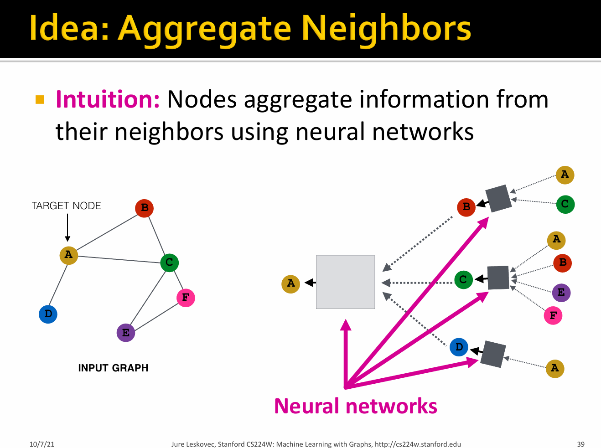


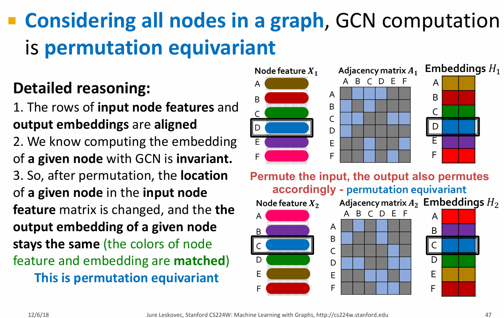
Graph Neural Networks
设\(H^{(k)}=[h_1^{(k)},...,h_{|V|}^{(k)}]^T\)，则\(\sum_{u \in N_v} h_u^{(k)}=A_{v,:}H^{(k)}\)
A 为一个稀疏的单位矩阵，Example:\(\begin{bmatrix} 1 & 0 & ... & 0 & 1 & 0 \\ 1 & 0 & ... & 0 & 1 & 0 \\ ... \\ 1 & 0 & ... & 0 & 1 & 0 \\ \end{bmatrix}\)
设对角矩阵（diagonal matrix）\(D\),即\(D_{v,v}=Deg(v)=|N(v)|\),则\(D_{v,v}^{-1}=1/|N(v)|\).
Therefore,\(\sum_{u \in N(v)} \frac{h_u^{(k-1)}}{|N(v)|} \rightarrow H^{(k+1)} = D^{-1}AH^{(k)}\)
so，$H^{(k+1)} = \sigma (D^{-1} A H^{(k)} W_k^T + H^{(k)} B_k^T) $
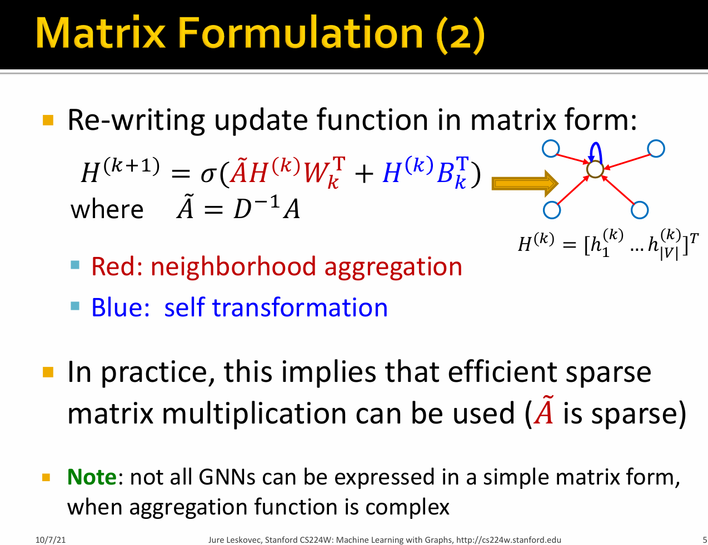
Graph unsupervised training
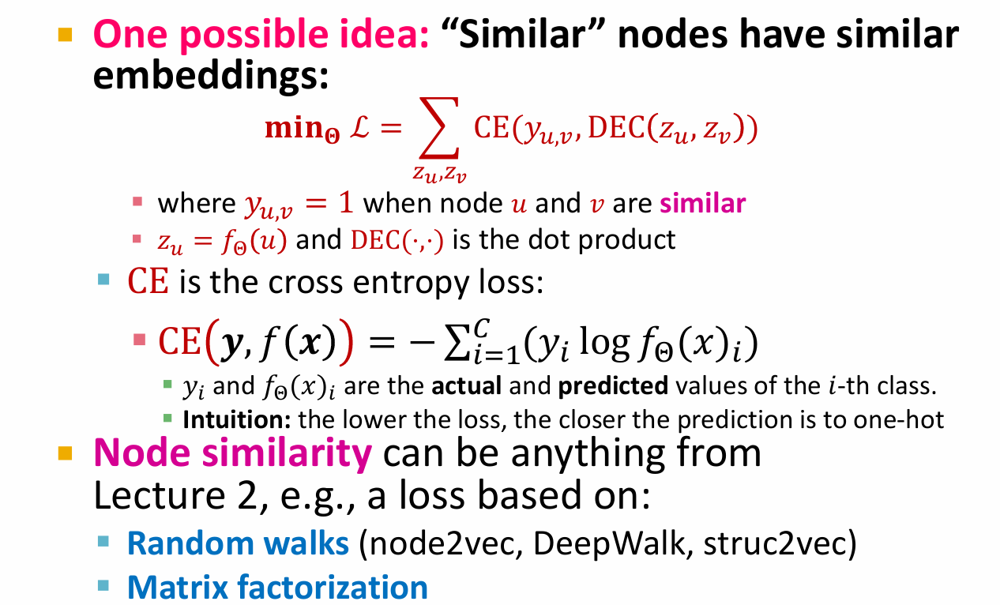
Graph supervised training
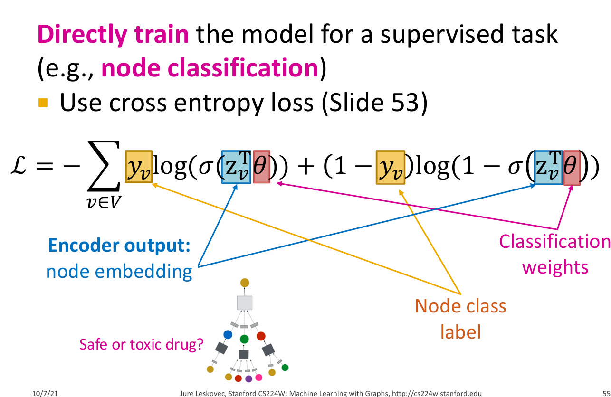
根据上述，GNN的目标是获取一个输入图\(G=(\mathbb{V,E})\)，其中每个节点\(v_i \in \mathbb{V}\)都有一个输入特征向量\(X_i\)，以此学习一个函数$f_G : \mathbb{V} \times \mathbb{R}^{d_1} \to \mathbb{R}^{d_2} $，该函数接收一个节点及其特征向量以及图结构，并输出一个嵌入，即一个以对我们的下游任务有用的方式表示该节点的向量。
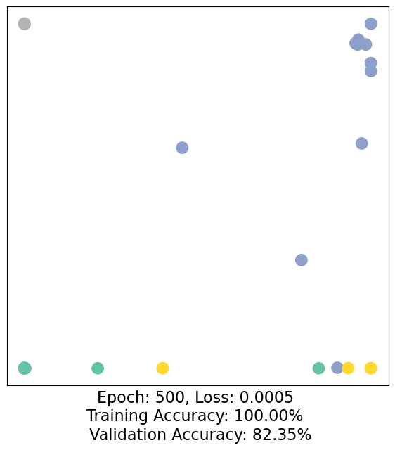
comparison with other methods
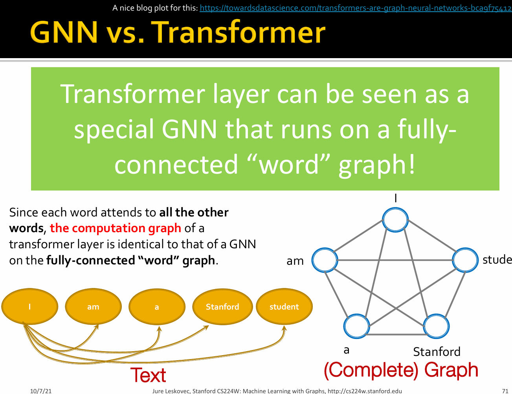 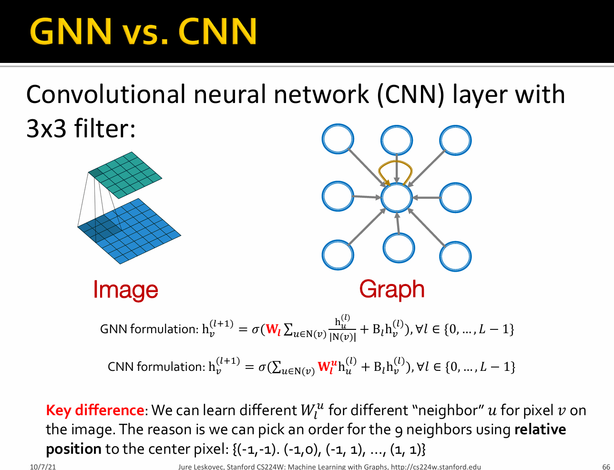
以 karate club为例：
Q1:Average Degree if a graph
Q2:the average clustering coefficient of the graph
平均聚类系数(average clustering coefficient):描述一个图中的顶点之间集成团(clique)的程度系数。即一个点的邻接点之间相互连接的程度。若一个节点\(i\)的度为\(k_i\)，\(e_i\)为该节点与邻居之间存在的边数，则\(\(C_i=\frac{2e_i}{k_i(k_i-1)}\)\)
Q3:PageRank
- 经典图算法：PageRank
PageRank measures importance of nodes in a graph based on its link structure.
Core idea:
-
The more pages link to this page, the more important it is;
-
A link from an important page is worth more.
If a page \(i\) with importance \(r_i\) has \(d_i\) out-links, then each link gets \(\frac{r_i}{d_i}\) votes.Thus, the importance of a page \(j\), represented as \(r_j\) is the sum of the votes on its in links.
, where \(d_i\) is the out degree of node \(i\).
The PageRank algorithm (used by Google) outputs a probability distribution which represent the likelihood of a random surfer clicking on links will arrive at any particular page.
At each time step, the random surfer has two options:
-
with prob. \(\beta\), follow a link at random
-
with prob. \(1- \beta\), jump to a random page
What is the PageRank value for node 0 after one PageRank iteration?
Q4:the (raw) closeness centrality
邻近中心度(closeness centrality)衡量网络中节点到其他节点的平均距离,距离越短表示节点越接近网络中的其他节点,其Closeness Centrality值越高。\(\(c(v) = \frac{1}{\sum_{u \neq v}\text{shortest path length between } u \text{ and } v}\)\)
nx.clossness_centrality输出的是\(\frac{n-1}{\sum_{u \neq v} d(u,v)}\)，其中\(d(u,v)\)表示节点\(u\)和\(v\)之间的最短路径长度。
Q5:get the edge_list ,transform it into torch.LongTensor
Q6:negative sampling
"Negative" edges 指的是图中不存在的边，可以作为负样本